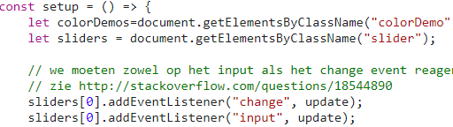
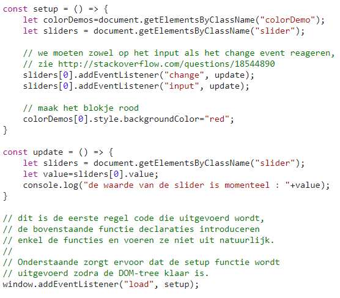

Waar wordt de event listener gekoppeld aan de slider?
aan de change en input.
Waarom moeten we die op twee soorten events koppelen?
om dat je ze alle 2 nodig hebt.
In de CSS-file wordt nergens een rode kleur opgegeven, waar wordt dan wel de rode kleur van het blokje ingesteld?
omdat, je in de script file, wel er naar vraagt om met een nieuwe klasse de kleur rood weer te geven.
Waarom schrijven we telkens sliders[0] en colorDemos[0] en niet gewoon sliders of colorDemos?
om dat je die nodig hebt.